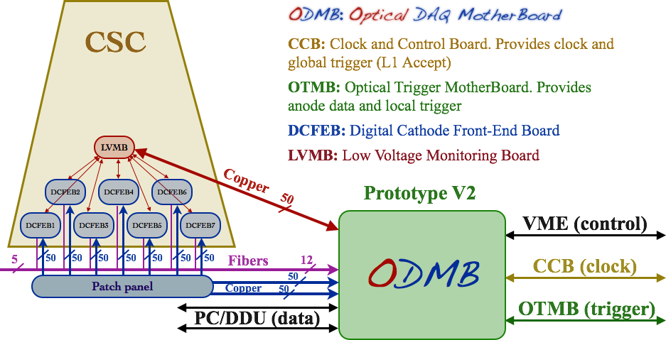

Upgrade of the DAQ MotherBoard for the CMS muon endcap detector
The muon detector endcap of the CMS experiment at CERN is instrumented with Cathode Strip Chambers (CSCs). These detectors identify muons emitted in the forward and backward directions (0.9 < |η| < 2.4), which are signatures of Standard Model (e.g. H → ZZ → μ+μ- μ+μ-) and New Physics (e.g. Supersymmetry) processes. Because muons are highly penetrating particles, they are easily distinguishable and provide effective triggering capabilities.
The innermost muon station, ME1/1, is critical for muon momentum resolution, but suffers high particle rates at the limit of the data acquisition system to handle. During the 2013-14 shutdown, the electronics in this station will undergo significant upgrades. Among them, the Cathode Front-End Boards (CFEBs) will be replaced by "digital" DCFEBs that flash-digitize every channel rather than using a custom analog storage pipeline. The number of DCFEBs per CSC chamber will be increased from 5 to 7, and the data will be sent out via optical links.
These improvements require the design of new optical data acquisition boards (ODMBs) that can handle the optical readout of data and the increased number of DCFEBs. The design of these boards started in 2010, and they are expected to be installed in the Fall of 2013.
